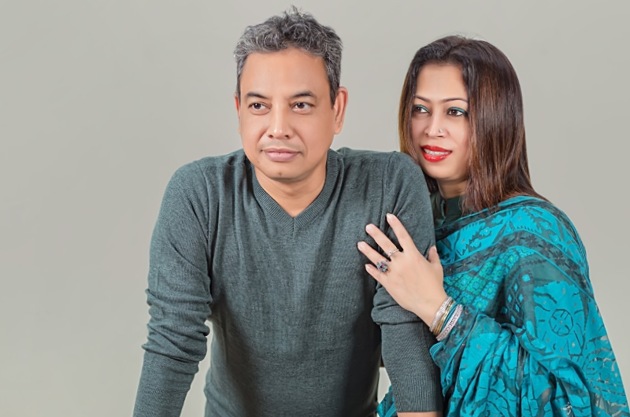

Founders
Md. Afzalur Rahman & Salma Rahman
Managing Director & Chairman

Since 2002
Fashion Comfort (BD) Ltd. was established. Today it is known as FCBL.
FCBL started working as a buying agent in Bangladesh with European brands.
FCBL began working with the Inditex Group (Men and Kids) through Maglifico Diana.
Hebei Wilson Textile Co. Ltd. (China) and FCBL formed a joint venture, entering the wool yarn business.
Beijing Jishida Textile Co. Ltd. started operations in Bangladesh with FCBL as a partner (JSD Bangla). FCBL also established a state-of-the-art R&D division with international expertise: the FCBL Sample Home.
SQ Celsius and FCBL partnered to produce cashmere and wool yarn in Bangladesh.
FCBL and Yarns & Colors started a collaboration in Bangladesh to develop new fancy yarn opportunities. A new strategic production unit was established: ASDWA Fashion Ltd.
FCBL partnered with Dehong International Cashmere Co., Ltd., focusing on cashmere and heavy knitwear. FCBL opened its Barcelona office: Fashion Comfort Europe S.L., strengthening communication with European clients and supporting design development.
FCBL launched its own production facility, ASDWA Fashion Ltd., a modern and sustainable knitwear factory in Bangladesh. The factory expanded with new jacquard machines to increase capacity and efficiency, supporting international clients with reliable and scalable production.
Partner with a team that values quality, transparency and long-term relationships
Contact Us